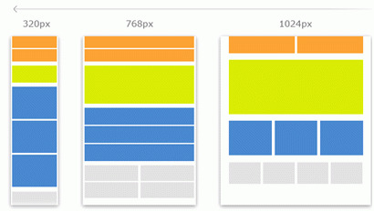

Douglas Crockford lanza JSON.org, que describe el formato de intercambio de datos que él y Chip Morningstar habían creado un año antes.
21 de septiembre de 2004
El Diseño dependiente de resolución publicado por Cameron Adams en su blog, es una nueva técnica que utiliza Javascript para detectar la resolución del monitor del visitante de un sitio e intercambiar diferentes hojas de estilo en función del resultado. Esto permite a los diseñadores cambiar el diseño de su sitio en función de la resolución, y prefigura las técnicas del diseño web responsivo.

18 de febrero de 2005
Jesse James Garrett codifica la metodología Ajax (Asynchronous Javascript and XML) para describir el uso de Javascript para recuperar datos de un servidor y mostrarlos en una página sin necesidad de actualizarla. Aunque la técnica ya se utilizaba desde hacía tiempo, Garrett codificó oficialmente la metodología.
1 de diciembre de 2008
Surgimiento del Diseño Web Flexible, Zoe Gillenwater publica su libro Flexible Web Design: Creating Liquid and Elastic Layouts with CSS, una compilación de técnicas y tutoriales para la implementación de cuadriculas fluidas y un diseño web elástico.
27 de mayo de 2009
Node.js es lanzado por Ryan Dahl, el cual usa el motor Google’s V8 JavaScript para permitir ejecutar JavaScript desde el servidor y no solo desde el navegador del cliente.
20 de octubre de 2010
AngularJS es desarrollado por el ingeniero de software Miško Hevery, siendo de código abierto permite a los diseñadores web crear aplicaciones de una sola pagina usando datos directamente en plantillas HTML, ayuda a la gestión con de conexión con servidores, manipulación de datos.